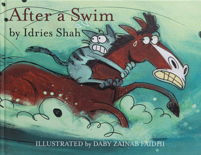

After a swim by Idries Shah
September 24,2020
We are all limited by our habits. In this story, a cat and horse make a deal to cross a river together to enjoy juicy corn in a field on the other side. But the cat’s idiotic habits cause trouble and the horse must not only get them to safety but teach the cat a lesson.
After a Swim teaches children that if they are captive to their poor behaviour and make excuses for themselves, no amount of ambition, innovation or motivation will lead to success. The cat learns that lesson to its surprise and detriment, in this funny, memorable tale
We are all limited by our habits. In this story, a cat and horse make a deal to cross a river together to enjoy juicy corn in a field on the other side. But the cat’s idiotic habits cause trouble and the horse must not only get them to safety but teach the cat a lesson.
After a Swim teaches children that if they are captive to their poor behaviour and make excuses for themselves, no amount of ambition, innovation or motivation will lead to success. The cat learns that lesson to its surprise and detriment, in this funny, memorable tale.
The story of Petney and hair theft
September 24,2020

There was a village called Ratanpur where everyone was having a very good day. Ramen is a resident of that village. Ramen was sleeping then suddenly in the morning his wife shouted and called him to come to the next room. Ramen got up and came to the next room and saw that his daughter's hair had been cut short. Her daughter was very sad because her hair was gone. To alleviate her grief, her neighbors came to visit her every day to comfort her.... READ MORE
Petney in disguise
September 24,2020

There was a small village called Dholakpur. Everyone in that village lived in peace. Suddenly one day Petney was harassed in that village. Petney would pick up a small child as soon as he saw it, and that Petney would take the form of any human being. So no one could catch that petni. Talking about this, Ramesh and Jadu were returning home after finishing work from the field. Ramesh said I have only one son so I am very scared because one day my son will not be picked up by that petni. Jadu said yes brother I am really worried too. Because that petni takes the form of any human being, so it cannot be understood. One day he took my form and took my son away....READ MORE
The story of the crow and the pitcher
September 24,2020
It was very hot that summer. One such afternoon a crow was flying from afar. As a result of flying for a long time, he got very thirsty for water. He looked to see if there was water anywhere around. But he did not find water anywhere. Suddenly a pitcher fell in his eyes. He immediately went downstairs hoping to get some water and sat down on the pitcher. But the water fell just below the pitcher. Seeing this, the crow became sad. But since he could not find water anywhere else in the vicinity, he began to think about how to get water out of that pitcher..... READ MORE